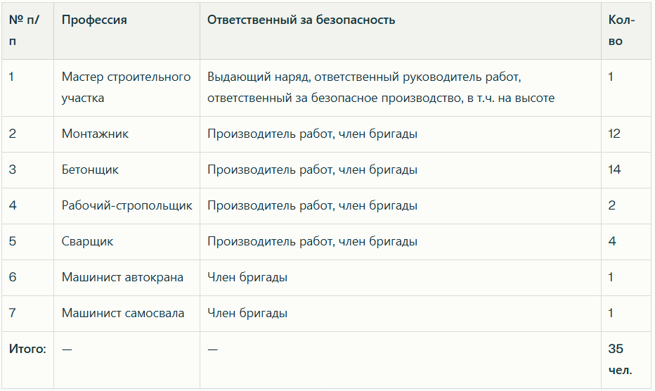
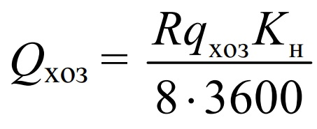
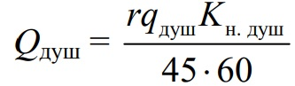

Состав бригады

Переходим к разделу, который присутствует в любом ППР и часто вызывает замечания со стороны Заказчика. Его разработку необходимо выполнять внимательно и с учётом всех организационных особенностей проекта.
Работы могут выполняться двумя способами:
- силами строительной организации (МО), когда подрядчик самостоятельно заходит на объект, выполняет работы и уходит;
- с привлечением командированного персонала, направленного на объект сторонней организации (например, завода или предприятия).
Командированные сотрудники — это специалисты, выполняющие работы на чужих объектах по поручению своей организации. Они не обязательно приезжают из другого региона: главное отличие — работа на территории сторонней организации, которая возлагает на подрядчика ответственность за соблюдение техники безопасности.
При подготовке ППР необходимо:
- уточнить форму допуска работников на объект у руководителя проекта;
- указать организацию-исполнителя;
- обозначить метод привлечения персонала — вахтовый или невахтовый;
- прописать условия проживания, размещения и обеспечения работников необходимыми средствами.
Различие методов:
- Вахтовый метод — прибытие специалистов из других регионов.
- Командирование — выполнение работ местными рабочими через подрядчика.

Условия проживания и размещения
В этом разделе предусмотрите создание необходимых условий труда для сотрудников. Это наличие санитарно-бытовых помещений, инженерное обеспечение (вода, электричество, отопление), санитарно-гигиенические условия (биотуалеты) и безопасность труда (наличие аптечек, огнетушителей. освещение бытовок).
Расчет потребности в воде
Потребность в воде для обеспечения рабочих включает в себя расход на хозяйственно-питьевые нужды и расход воды на душевые:
Расход воды на хозяйственно-питьевые нужды Q хоз., л/с,

где R — количество рабочих в наиболее загруженную смену;
qхоз — расход воды на одного работающего (ориентировочно 36 л/чел. в см.);
Kн — коэффициент неравномерности потребления.
Расход воды на обеспечение работы душевых Qдуш., л/с,

определяется с учетом норматива расхода на одного человека 45 л.
где r — количество людей, пользующихся душевыми (принимается 70 % от общего числа рабочих);
qдуш — расход воды на одного работающего, 50 л/чел.;
Kн. душ — коэффициент неравномерности потребления,
Коэффициент неравномерности потребления воды: для производственных расходов – 1,6; для подсобных предприятий – 1,25; для транспортного хозяйства -2,0; для санитарно-бытовых нужд – 2,7.
Выбор системы водоотведения
Инвентарные санитарные устройства являются обязательным элементом обустройства строительной площадки. Современное оснащение территории предполагает использование мобильных санитарно-гигиенических комплексов. Расчет необходимого количества санитарно-гигиенических помещений проводите с учетом количества работающих:
- при количестве работников от 1 до 20 человек — установка одной туалетной кабины;
- при численности от 21 до 200 человек.
- один туалет с сидячим местом (женский)
- дополнительные кабины из расчета одна на каждые 40 работников
Выбор системы электроснабжения
Электроснабжение стационарных городков обеспечивается трансформаторными подстанциями. Стандартные подстанции обладают мощностью до 1000 кВ·А и оснащаются одним либо двумя трансформаторами.
При дефиците энергоснабжения используются временные электростанции. Они широко распространены на этапе подготовки стройплощадок и начального периода работ. Такие мобильные установки подразделяют на три категории:
- маломощные станции до 100 кВт с бензиновыми или дизельными двигателями;
- средние станции до 1000 кВт с дизельными агрегатами;
- мощные энергопоезда свыше 1000 кВт, оснащённые газо- и паротурбинными установками.
Самое время потренироваться. Рассчитайте расход воды на хозяйственно-бытовые цели.